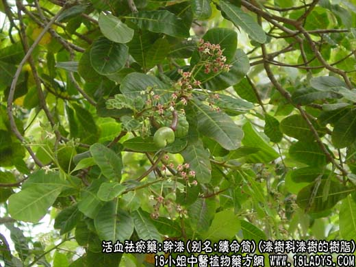
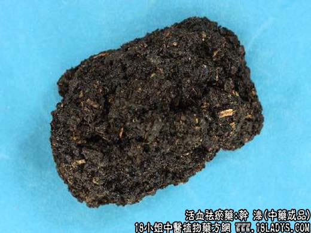

【功效与作用】
干漆，别名：续命筒、漆渣、黑漆、漆底、漆脚，为漆树科乔木植物漆树的树脂。辛、苦，温；有毒。归肝、胃经。
1．破血，祛瘀，通经：用于瘀血阻滞引起的经闭症瘕结块，可与当归，川芎，桃仁等同用。
2．杀虫：用于虫积、腹痛、蛔虫、蛲虫等，可与杀虫药同用。
【药物形态】
本品呈不规则块状，黑褐色或棕褐色，表面粗糙，有蜂窝状细小孔洞或呈颗粒状。质坚硬，不易折断，断面不平坦。具特殊臭气。
【化学成分】含漆酚50％～80％，为数种儿茶酚衍生物的混合物。
【用量用法】2——9g，水煎服，或入剂。外用适量。
【使用注意】孕妇及体虚无瘀者均忌服。